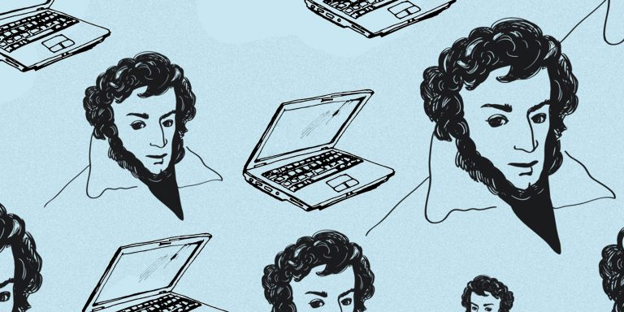

Немного обо мне
Привет! Меня зовут Настя, я учусь в группе 4217 на направлении «Прикладная информатика».
О веб-разработке я знаю не понаслышке, и за моими плечами уже есть парочка проектов:
как-то раз в школе делала сайтик с подборкой образовательных платформ и из интереса сайт-портфолио.
«Мои любимые поэты и их произведения»
- Иосиф Бродский
- Борис Рыжий
Сборник стихов целиком